| SOURCE | TITLE| IMAGE MATCH | click to source page |
| Colnect | Stamp: Gold medalist György Gedo (Hungary(Summer Olympic Games 1972 - Munich (Medals)) Mi:HU 2851A,Sn:HU C333,Yt:HU PA357,Sg:HU 2786,AFA:HU 2791,Phi:HU 2866 📮 | 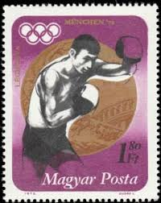 |
| HipStamp | Mongolia 518: 20m Laszlo Papp, CTO, VF | Asia - Mongolia, General Issue Stamp / HipStamp | 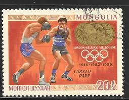 |
| Society for Hungarian Philately | THE NEWS OF HUNGARIAN PHILATELY | 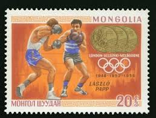 |
| eBay | Boxing Hungarian Stamps for sale | eBay | 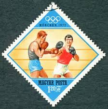 |
| Dreamstime.com | Stamp Printed by Korea, Shows Boxing Editorial Photo - Image of korean, 1970s: 361072936 | 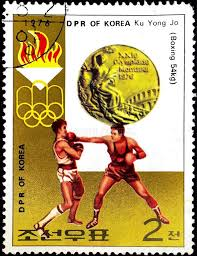 |
| Dreamstime.com | DPR KOREA - CIRCA 1973: a Stamp Printed in DPR Korea, Shows Games of the XXI Olympiad Boxing Ku Yong Jo, Circa 1976 Editorial Stock Photo - Image of games, 1976: 90066678 | 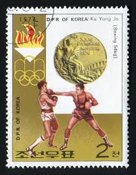 |
| Shutterstock | Ajman Circa 1972 Stamp Printed Ajman Stock-foto 231032902 | Shutterstock | 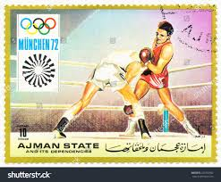 |
| Colnect | Stamp: Ku Yong Jo, DPRK - Boxing (Korea, North(Summer Olympic Games 1976 - Montreal (Medals) (III)) Mi:KP 1537,Sn:KP 1491,Yt:KP 1392U,Sg:KP 1544 📮 | 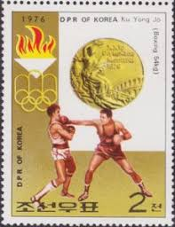 |
| HipStamp | Search "Ethiopia 1972" / HipStamp | 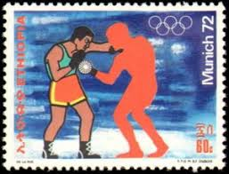 |
| Shutterstock | 1960 Olympics: Over 729 Royalty-Free Licensable Stock Photos | Shutterstock | 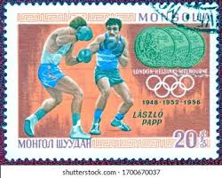 |
| Colnect | Stamp: Laszlo Papp (Mongolia(Gold medalists at the 8th to the 19th Summer Olympic Games) Mi:MN 533,Sn:MN 518,Yt:MN 472,Sg:MN 509 📮 | 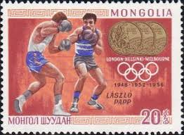 |
| Old-Stamps.com | Magyar Olimpiai Bizottság 1895-1970 / Magyarország | 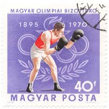 |
| eBay | HUNGARY -1972- Summer Olympics in Munich - Boxing - MNH Stamp - Scott #2153 | eBay | 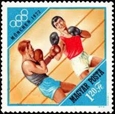 |
| Caroline Moore (carolinem2956) - Profile | Pinterest | 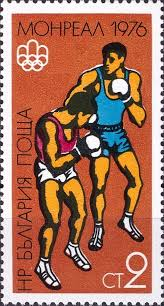 | |
| Alamy | Stamp boxing hi-res stock photography and images - Page 3 - Alamy | 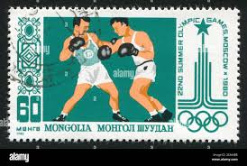 |
| Dreamstime.com | Boxing, German Olympic Champions, Mahra State Serie, Circa 1968 Editorial Photo - Image of collection, design: 145200076 | 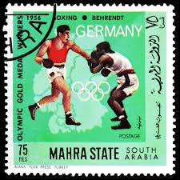 |
| Wikipedia | Ամառային օլիմպիական խաղեր 1956 - Վիքիպեդիա | 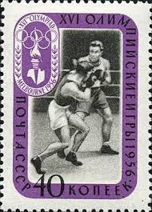 |
| Alamy | ROMANIA - CIRCA 1972: a stamp printed in the Romania shows Boxing, Silver Medal at 20th Olympic Games, Munich, circa 1972 Stock Photo - Alamy | 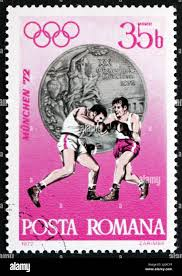 |
| GetArchive | 23 1988 summer olympics on stamps Images: PICRYL - Public Domain Media Search Engine Public Domain Search | 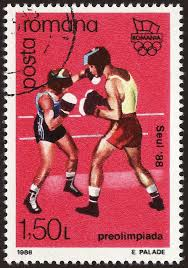 |
| OnlineStampShop | Mongolia Postage Stamps | 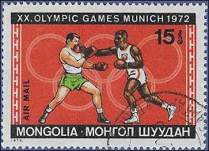 |
| Alamy | Boxing in munich hi-res stock photography and images - Alamy | 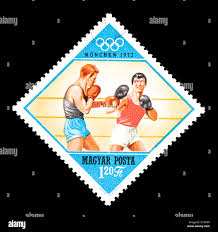 |
| lastdodo.com | Olympic Games 50 (1972) - Ras al-Khaimah - LastDodo | 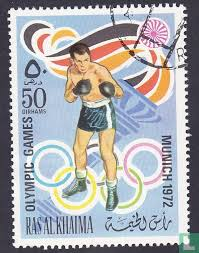 |
| Alamy | Old man boxing hi-res stock photography and images - Page 19 - Alamy | 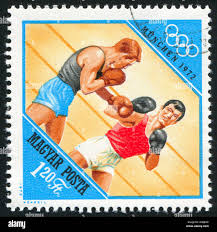 |
| HipStamp | Hungary 2036 - Cto - 40f Olympics / Boxing (1970) | Europe - Hungary, General Issue Stamp / HipStamp | 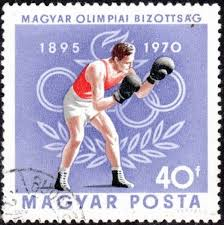 |
| Shutterstock | 1984 Olympics: Over 1,885 Royalty-Free Licensable Stock Photos | Shutterstock | 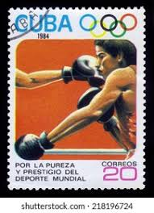 |
| Alamy | The boxer on Olympic games. The scanned stamp. The Hungarian stamp Stock Photo - Alamy | 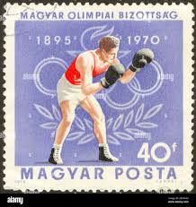 |
| eBay | UPPER VOLTA C113 (Mi391) - Munich Olympics "Boxing" (pf34899) | eBay | 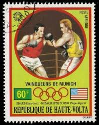 |
| eBay | Ras Al Khaimah Postage Stamp | eBay | 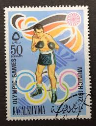 |
| eBay | Emirati Postage Sports Postal Stamps for sale | eBay | 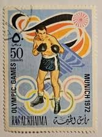 |
| Pngtree | Olympic Games 2021 Background Images, HD Pictures and Wallpaper For Free Download | Pngtree | 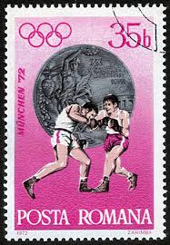 |
| allnumis.com | 2$50 Moscow Olympics-Boxing 1980, Sport Olympic - Cape Verde - Stamp - 5958 | 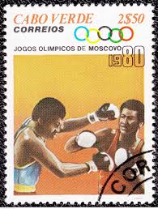 |
| Find Your Stamps Value | Value of mexico 1968 cultural olympiad stamps | 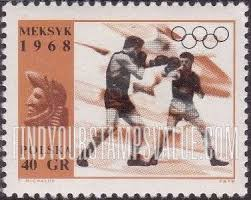 |
| The Philately | Hungary 1985 Mi 3750A European Boxing Championships Sc 2918 for sale at The Philately | 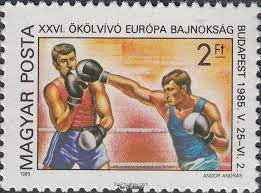 |
| Alamy | North korean sport hi-res stock photography and images - Page 7 - Alamy | 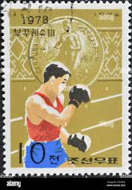 |
| Find Your Stamps Value | Value of 1960 rome olympic stamps | 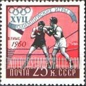 |
| eBay | MOLDOVA 2008 Sport Olympics Beijing China Boxing Medal Winner Overprinted 1v MNH | eBay | 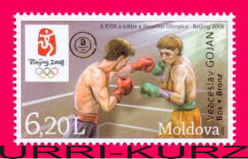 |
| stamprussia.com | Russian Topical Stamps: B O X I N G | 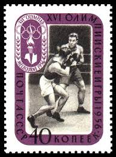 |
| eBay | Boxing Emirati Stamps for sale | eBay | 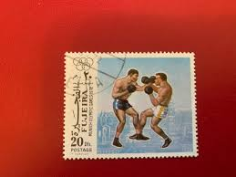 |
| Shutterstock | Cuba-circa 1976 Postal Stamp Printed Cuba Foto de stock 97492724 | Shutterstock | 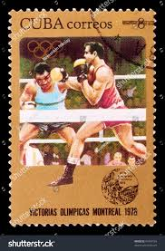 |
| Shutterstock | 1+ Hundred Forward Command Post Royalty-Free Images, Stock Photos & Pictures | Shutterstock | 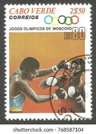 |
| Fandom | Cuba 1964 Summer Olympics - Tokyo | JPP-Stamps Wiki | Fandom | 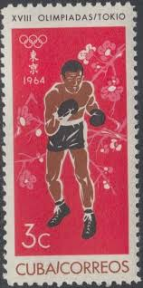 |
| eBay UK | Boxing Hungarian Stamps for sale | eBay UK | 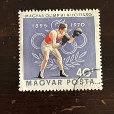 |
| commonwealthstamps.com | Sierra Leone 1984 Olympic Games SG 791 Fine Mint | 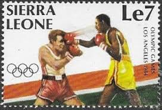 |
| Shutterstock | 48 Ku Mail Royalty-Free Images, Stock Photos & Pictures | Shutterstock | 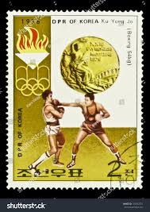 |
| OnlineStampShop | Mongolia Postage Stamps | 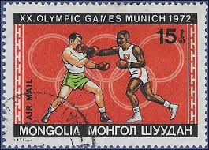 |
| Shutterstock | Hungary Olympics: Over 6,881 Royalty-Free Licensable Stock Photos | Shutterstock | 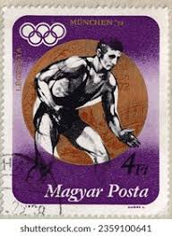 |
| Dreamstime.com | Cuba Postage Stamp Shows Boxing, Series Devoted To the Montreal Games 1976, Circa 1976 Editorial Photography - Image of boxers, circa: 101757282 | 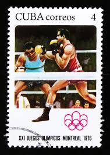 |
| eBay | Hungary Olympics Fan Apparel & Souvenirs for sale | eBay | 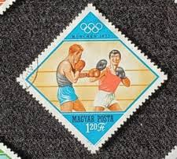 |
| eBay | 👉 HUNGARY 1980's SPORTS/OLYMPICS MNH | eBay | 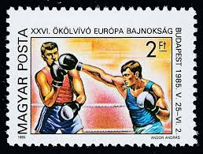 |
| eBay | 1976 1980 1983 Portugal Sport Stickers packet Pick pegatina Olympics Games | eBay | 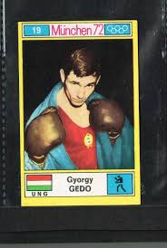 |
| eBay | comorores 1992 olympics,gold foil,,Sc C215 MH | eBay | |
| Wikipedia | Fil:1972 CPA 4139.jpg - Wikipedia, den frie encyklopædi | |
| Colnect | Stamp: Boxing (Ajman(Summer Olympic Games 1964, Tokyo) Mi:AJ 32A,Sn:AJ 28,Yt:AJ 28,Sg:AJ 28,Col:AJ 1965.01.12-02 📮 | |
| eBay | Australian First Day Cover Olympics Postal Stamps for sale | eBay | |
| eBay | Polish Boxing Olympics Postal Stamps for sale | eBay | |
| Mystic Stamp | 57217B - 1984 Olympic Yugoslavia Boxing Cover - Mystic Stamp Company | |
| Get Archive | DOMREP 1957 MiNr0585 mt B002a - Public domain portrait drawing - PICRYL - Public Domain Media Search Engine Public Domain Image | |
| Dreamstime.com | Postage Stamp Printed in Mongolia with a Picture of Seven-time Olympic Champion Boris Shahlin Gymnastics Editorial Photo - Image of national, history: 179973381 | |
| buyhungarianstamps.com | 666-670 Albania - 1964 Olympic Games in Tokyo, Perf. (MNH) – Eastern Europe Postage Stamps | Hungaria Stamp Exchange | |
| Alamy | AJMAN - CIRCA 1971: a stamp printed in the Ajman shows Boxing, Summer Olympics 1972, Munich, circa 1971 Stock Photo - Alamy |
{kind=link}